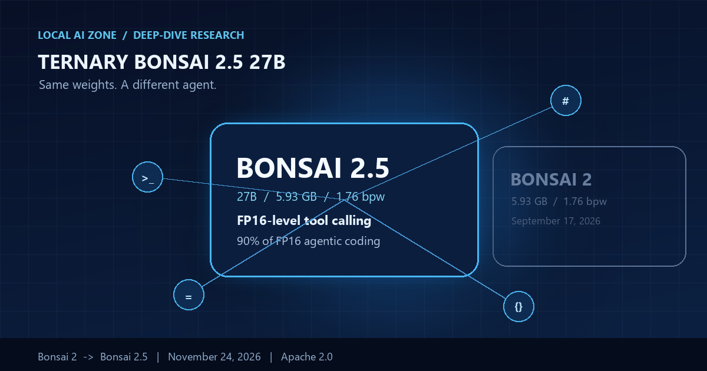
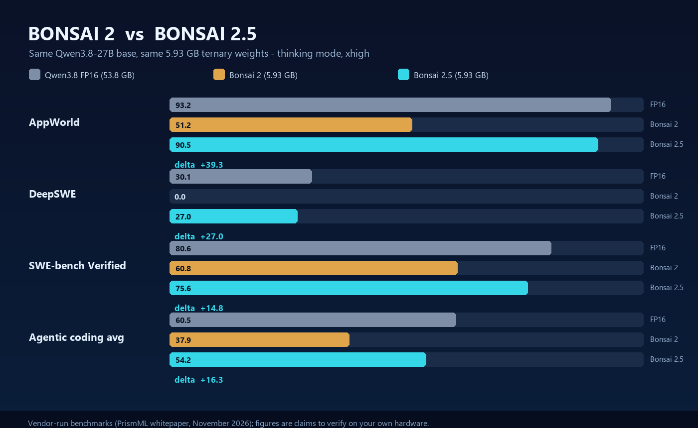

5.93 GB
Unchanged ternary footprint
Blog & Guides
On November 24, 2026, Prism ML shipped a replacement for Bonsai 2 27B that changes none of the weights and nearly all of the behavior. Same Qwen3.8-27B architecture, same 1.76 bits per weight, same 5.93 GB. This paper puts the two releases side by side, benchmark by benchmark, and asks what a 63% → 90% jump in retained agentic coding actually means.

What this paper claims, what it does not, and how the side-by-side evidence is organized.
There is a particular kind of release that is easy to misread. Ternary Bonsai 2.5 27B, published by Prism ML on November 24, 2026, is not a smaller model, not a new base model, and not a new quantization format. It is the same 27.36-billion-parameter Qwen3.8-27B derivative, the same ternary g128 representation with one FP16 scale per 128 weights in a blockwise Hadamard basis, the same 1.76 bits per weight and the same 5.93 GB PTQ1_0 file that shipped as Bonsai 2 27B on September 17. Anyone comparing file names or parameter counts would conclude nothing happened.
Anyone comparing behavior would conclude the opposite. Across the three agentic coding benchmarks Prism uses — Terminal-Bench 2.1, SWE-bench Verified and DeepSWE 1.1 — Bonsai 2 retained 63% of the FP16 base model’s score and solved zero DeepSWE tasks. Bonsai 2.5 retains 90% and scores 27.0 on DeepSWE, against 30.1 for FP16. On AppWorld, a tool-use benchmark where the agent writes code against the APIs of nine everyday apps, the score moves from 51.2 to 90.5 — past every conventional low-bit build of the same base model, including one that is 1.7× larger. The five-benchmark tool-calling average goes from 67.0 to 77.2, essentially level with FP16’s 77.7.
That is the whole story of this release: intelligence density held constant, agentic reliability recovered. The weights did not get smaller; the model got better at staying on task. Prism’s own framing is that Bonsai 2.5 “reads tool results, recovers when a step fails, and keeps the objective in view, and it finishes in fewer turns and fewer tokens, with less of the over-thinking and repetition the earlier model could fall into.” The engineering changes that accompany that behavior are modest on paper — MTP draft-head variants of every packing, a changed recommended min_p, and Q2_0 moved into the main repository — but the measured effect is large.
This paper is built as a side-by-side deep dive. Every results chapter uses the same three-column frame: Qwen3.8-27B FP16 (53.8 GB), Bonsai 2 27B (5.93 GB), and Bonsai 2.5 27B (5.93 GB). Where a number changed, the delta is stated in prose and shown in the comparison graphic in Chapter 9. Readers who want the format maths — how ternary storage, the rotated basis and the low-bit kernels work — should read the companion Bonsai 2 27B deep dive first; Chapter 2 here summarises only what carried over.
Part I (Chapters 1–3) fixes the release in time and lists exactly what did and did not change. Part II (Chapters 4–5) explains why agentic work is the hardest possible test for a compressed model and how the numbers were produced. Part III (Chapters 6–9) is the side-by-side evidence: tool calling, coding, general capability, and a visual comparison. Part IV (Chapters 10–12) covers MTP throughput, file packings and a deployment guide. Part V (Chapters 13–14) handles limitations, reception, the verdict and sources.
Readers evaluating only whether to upgrade can read the abstract, Chapter 3’s change table, Chapters 6–9, and Chapter 14. Readers deploying the model should add Chapters 10–12 in full.
Every figure in this paper comes from Prism ML’s own whitepaper, documentation or model cards, or from contemporaneous press coverage; none is estimated by the author. The benchmarks are vendor-run. On launch day there was no independent leaderboard entry for Bonsai 2.5, and at least one reviewer explicitly advised readers to treat the scores as claims to verify on their own hardware. One methodological break is important enough to repeat wherever the tool-calling table appears: the τ²-Bench, τ³-Bench and BFCL v3 figures were produced with a thinking-mode user simulator and native tool calls, so they are not comparable with the original Bonsai 2 report. The Bonsai 2 numbers in this paper are re-runs under the newer harness. Both caveats are carried in the relevant chapters, not buried in the sources.
A November release that replaces a September release without changing the bytes that made the September release remarkable.
Prism ML announced Ternary Bonsai 2.5 27B on November 24, 2026, a little over two months after Bonsai 2 27B shipped on September 17. The company calls it “the agentic release of the Ternary Bonsai 27B line” and describes it directly as an upgrade: it “replaces Ternary Bonsai 2 27B. The base model, the ternary format, the file size, and the runtimes are all the same; what changed is how the model behaves over a long task.” The weights remain available under Apache 2.0, and the previous generation stays published at prism-ml/Ternary-Bonsai-2-27B-gguf and -mlx-2bit for anyone who wants to keep it.
The stated motivation is specific rather than generic. With Bonsai 2, Prism says, the company brought “stronger reasoning, visual understanding, and tool use to local devices.” What it heard back from developers was that agents built on the model lost the thread over long sequences of tool calls: they misread results, repeated failed approaches, over-thought, and burned turns. Bonsai 2.5 is the answer to that feedback. In the announcement’s words, it “completes tasks in fewer turns, uses fewer tokens, and delivers results faster and more accurately.” The release is therefore best understood as a post-training and serving change layered on an unchanged compressed checkpoint, plus a runtime feature (the draft head) that makes the same weights faster to decode.
The timing matters for how the numbers should be read. Bonsai 2 27B’s benchmark record accumulated over September and October as kernels matured; the 2.5 release arrives with both a new evaluation harness for agentic benchmarks and a newer runtime. That means two different kinds of improvement are tangled together in the headline deltas — model behavior and tooling — and Prism is careful to separate them in the model card’s speed tables. Chapters 6–9 deal with behavior; Chapter 10 deals with the runtime.
Bonsai 2 proved a 27B reasoning model could live in 5.93 GB; Bonsai 2.5 argues that the same 5.93 GB can now do the work an agent actually needs it to do. This paper tests that argument against every published table.
The base model, the parameter split, the ternary grid, the rotated basis, the context window, and the price of entry.
It is worth being precise about the things Bonsai 2.5 did not change, because they are the things that made Bonsai 2 interesting in the first place. The new release keeps the Qwen3.8-27B hybrid-attention architecture untouched. It keeps the same 27.36B total parameter count, split the same way. It keeps the same ternary representation — weights restricted to {−1, 0, +1}, with a single FP16 scale factor shared by each group of 128 weights — and the same blockwise Hadamard rotation folded offline into the stored weights, so the runtime applies a matching transform to activations and the rotation costs no extra bits and no extra weight traffic. A ternary value carries log23 ≈ 1.585 bits of information, and the group scales bring the shipped figure to 1.76 bits per weight.
| Item | Bonsai 2 27B | Bonsai 2.5 27B | Changed? |
|---|---|---|---|
| Base model | Qwen3.8-27B | Qwen3.8-27B | No |
| Architecture | Hybrid attention (~75% linear / ~25% full), SwiGLU MLP, RoPE, RMSNorm | Identical | No |
| Parameters | 27.36B total = 24.35B language + 2.54B embedding/LM head + 0.47B vision tower | Identical | No |
| Weight format | Ternary g128, FP16 group scale, Hadamard-rotated basis | Identical | No |
| Bits per weight | 1.76 | 1.76 | No |
| Size (PTQ1_0) | 5.93 GB | 5.93 GB | No |
| Context length | 262,144 tokens | 262,144 tokens | No |
| Modalities | Text + image in, text out | Identical | No |
| Reasoning efforts | xhigh / medium | Identical; low explicitly unsupported | Clarified |
| License | Apache 2.0 | Apache 2.0 | No |
Prism marks changed items with a dagger in its own tables. Almost nothing in the system specification carries one — the daggers cluster around focus, decoding and speculative decoding.
The practical consequence is that upgrading costs no memory. A machine that could hold Bonsai 2 in VRAM or unified memory can hold Bonsai 2.5. The vision tower still ships as a separate optional mmproj file, loaded only when image input arrives, so text-only serving never pays for it. The 262K-token context is unchanged, which matters for agentic work: a coding agent can keep a whole repository in view, and a tool-calling agent can keep a long transcript. If you already have a working Bonsai 2 setup, the upgrade is a weight download and a few flag changes, not a hardware purchase.
For the derivation of the format — why 1.58 bits is the natural floor, how the rotated grid preserves reasoning, what the hybrid-attention kernels do differently from a conventional 2-bit GGUF — this paper defers to the earlier report. The relevant point here is that none of that machinery was touched. Whatever Bonsai 2.5 gained, it gained without asking the representation to do more than it already did.
Five concrete deltas: focus, a draft head, a sampling default, a file location, and a clearer reasoning-effort story.
If the specification table is almost identical, the change list is short enough to hold in your head. Prism marks four items in its model overview with a dagger, and the documentation adds a fifth practical note. Each is listed below with its consequence.
| Change | Bonsai 2 | Bonsai 2.5 | Consequence |
|---|---|---|---|
| Focus | Reasoning, vision, tool use | Agentic and tool-use tasks | Post-training optimized for long sequences of tool calls and repository work |
| Speculative decoding | Community MTP head published three days after release | MTP variants of every packing carry a draft head in a separate -mtp repo; the base files do not | 1.5–1.8× decode speedup on NVIDIA GPUs without changing the output distribution |
| Thinking-mode min_p | Recommended 0.05 | 0.0 | llama.cpp still defaults to 0.05; pass --min-p 0 explicitly or benchmarks do not reproduce |
| Q2_0 packing | Not in the main GGUF repo | Sits alongside PTQ1_0 and PQ2_0 | Stock llama.cpp b11556+ can run the model directly |
| Reasoning effort | xhigh / medium | Same, with an explicit warning that low is unsupported | Selecting low behaves close to xhigh; use a token budget to bound thinking |
The first change is the one that matters most and the one hardest to see in a table. Prism does not publish a new architecture diagram for 2.5, because there is no new architecture. What it publishes is a different behavior profile: the model reads tool results, recovers when a step fails, keeps the objective in view, and finishes in fewer turns with fewer tokens. The company attributes this to work on “excessive thinking and repetitive loops” in the previous model. Chapters 6 and 7 quantify how much that was worth.
The second change is mechanical. A multi-token prediction head is one extra layer that guesses the next few tokens; the full model checks all the guesses in one pass and keeps only the tokens it would have produced itself. The output distribution is unchanged — Prism measures mean KL divergence of 5.2 × 10−5 between drafting on and off on an H200 with the PTQ1_0 file, no higher than a control that accepts every guess — so only speed differs. On an H200 the released setting drafts three tokens per pass with a 0.1 minimum draft probability; on an RTX 4090 the optimum is three drafts with no cutoff; on an Apple M4 Pro it is one draft with a 0.6 cutoff. The head makes its own pass over the prompt, which costs 9–23% of prefill speed on NVIDIA GPUs with released builds, so for long prompts with short answers it is better switched off. Chapter 10 has the full table.
The third change is a trap for anyone reproducing the numbers. llama.cpp applies min_p = 0.05 when you do not set it. Bonsai 2’s documentation recommended 0.05 in thinking mode; Bonsai 2.5 recommends 0.0, and every official command now passes --min-p 0. Get this wrong and you are not evaluating the same sampling distribution as the published benchmarks. Thinking mode uses temperature 1.0, top-p 0.95, top-k 20, min-p 0.0, presence penalty 0.0 and repetition penalty 1.0; instruct mode uses temperature 0.7, top-p 0.80, top-k 20, min-p 0.0, presence penalty 1.5 and repetition penalty 1.0. Mixing the two sets “degrades output quality,” in Prism’s words.
The fourth and fifth changes are about access rather than capability. Stock llama.cpp from release b11556 runs the Q2_0 file, which removes the need for the PrismML fork for users who do not need the fastest decode; older builds load it without any warning and produce garbage, so checking llama-cli --version is mandatory. And low reasoning effort is not supported: selecting it makes the model behave close to xhigh. To bound reasoning, use a token budget rather than the effort flag.
Why a benchmark that looks fine in aggregate can collapse when one bad action compounds across twenty tool calls.
To understand why Bonsai 2.5 exists, it helps to understand what agentic evaluation measures. A conventional benchmark asks a question and grades an answer. An agentic benchmark asks the model to operate: read a repository, form a plan, call a tool, read the result, adjust, call again, and eventually commit or answer. Every step is an opportunity to fail, and the failures are not independent. A misread file leads to a wrong edit; a wrong edit leads to a failing test; a failing test that the model does not understand leads to a second wrong edit, or to the model declaring victory early. Small errors compound.
This is why Prism describes agentic workflows as “particularly sensitive to model degradation” and why compression has historically hurt them most. A compressed model can score well on knowledge and math while losing the thin margin of reliability that keeps a long episode on track. The Bonsai 2 report recorded exactly that pattern: the language model’s reasoning core held close to FP16, but on agentic coding it kept 63% of the base score and solved none of the DeepSWE tasks. DeepSWE is a particularly unforgiving benchmark — 113 repository tasks graded by hidden tests on the agent’s final commit — and a zero there is not a small loss. It means the model never completed the loop successfully.
The second failure mode is as important as the first. Prism says the previous model could fall into “over-thinking and repetition”: long reasoning traces that consume the output budget before an answer, and unproductive retries after a tool result that should have ended the attempt. On a reasoning model with a default xhigh effort and a 262K context, unbounded thinking is not a cosmetic problem — it is the difference between finishing a task and timing out. Prism’s claim for 2.5 is that it finishes in fewer turns and with fewer tokens, which means less time spent thinking and less time re-doing work.
AppWorld 51.2 → 90.5 is the largest absolute move in the release. But DeepSWE 0.0 → 27.0 is the more diagnostic one: it is the difference between never completing a repository task and completing about a quarter of them. A model that scores zero on an agentic coding benchmark has failed at the loop, not at the code. Recovering 90% of FP16 on that benchmark is evidence that the loop now closes.
There is a useful caution here. Prism’s own limitations section notes that even its longest evaluations are “bounded, single-task episodes” and that it has not measured workloads that run for hours across many context windows. So the claim is narrower than “this is a reliable autonomous agent”: it is “this compressed model now keeps up with a single task over a realistic number of tool calls.” Chapter 13 returns to that boundary.
Evaluation setup, three columns, and one comparability break that changes how the tool-calling numbers should be interpreted.
All figures in this paper come from thinking-mode evaluations at reasoning effort xhigh. Prism uses one harness and serving path for every model, strips the reasoning block before grading, and evaluates pass@1; where a benchmark was run more than once, it reports the mean. Non-agentic benchmarks use EvalScope with the vLLM backend on NVIDIA H100 GPUs, with per-benchmark output budgets from 16,384 to 81,920 tokens. The conventional low-bit comparison builds — GSQ-RCO IQ3_XXS, IQ2_S, IQ2_XS and Unsloth Dynamic UD-IQ2_XS — are unpacked to BF16 and served through the same path. Their advertised “2-bit” labels hide true bit-widths of 2.27 to 2.75; Bonsai’s 1.76 is real end to end.
The agentic setups are more involved. Terminal-Bench 2.1 uses the Terminus-2 agent on all 89 tasks with a 262,144-token context, an 80,000-token output budget per turn and network access in the task container. SWE-bench Verified uses all 500 tasks with the mini-SWE-agent scaffold and a 262,144-token context, graded by the official test harness. DeepSWE 1.1 uses 113 repository tasks with the same scaffold, graded by hidden tests on the final commit. τ³-Bench and τ²-Bench use 375 and 278 tasks respectively, with a thinking-mode user simulator (deepseek-v4-flash at high reasoning effort, a 32,768-token budget and temperature 0). AppWorld uses its 168 test-normal tasks with a ReAct-style code-action agent, a 40,000-token output budget and a 131,072-token context, reporting the mean of task-goal and scenario-goal completion. BFCL v3 covers all 17 subsets including multi-turn, 4,441 items, with native tool calls; BFCL v4 adds 4,906 items and agentic memory categories, excluding web search.
Because τ²-Bench and τ³-Bench now use a thinking-mode user simulator and BFCL v3 uses native tool calls, Prism states that those figures are not comparable with the Bonsai 2 report. The Bonsai 2 column in Chapter 6 is therefore a re-run under the 2.5 harness, not the numbers published in September. The within-table comparison — Bonsai 2 versus Bonsai 2.5 on the same setup — is valid. A comparison against Bonsai 2’s original report is not. The coding and general-capability tables do not carry this caveat.
Finally, every number here is Prism’s own. The eesel AI review published on November 25 noted that it found no independent leaderboard entry on launch day and advised readers to treat every figure as a claim to check on their own hardware; Tested Intelligence made the same point from the opposite direction, framing the absence of independent benchmarks as a reason to skip the model if that is what you need. Neither review disputes a number. Both dispute the idea that vendor-run agentic scores are settled fact. This paper reports the numbers as claims, with attribution, throughout.
Five benchmarks, one near-perfect recovery, and one exception that keeps the result honest.
The tool-calling suite is where the release makes its cleanest claim. Across τ²-Bench, τ³-Bench, BFCL v3, BFCL v4 and AppWorld, Bonsai 2.5 averages 77.2 against 77.7 for the FP16 Qwen3.8-27B base. At one ninth the footprint, that is indistinguishable from full precision and ahead of every conventional low-bit build Prism compared against. It is also a large move from Bonsai 2’s 67.0 average on the same harness.
| Benchmark | Qwen3.8 FP16 | Bonsai 2 27B | Bonsai 2.5 27B | 2.5 vs 2 |
|---|---|---|---|---|
| τ²-Bench | 80.6 | 80.2 | 82.0 | +1.8 |
| τ³-Bench | 72.8 | 69.1 | 73.9 | +4.8 |
| BFCL v3 (native) | 71.2 | 70.3 | 72.6 | +2.3 |
| BFCL v4 | 70.8 | 64.4 | 67.2 | +2.8 |
| AppWorld | 93.2 | 51.2 | 90.5 | +39.3 |
| Average (5) | 77.7 | 67.0 | 77.2 | +10.2 |
| Size (GB) | 53.8 | 5.93 | 5.93 | — |
| Bits per weight | 16.0 | 1.76 | 1.76 | — |
Thinking mode, xhigh. Re-run harness as described in Chapter 5; the Bonsai 2 column is not the original September report. AppWorld is the mean of task-goal and scenario-goal completion.
Three of the five results are above FP16: τ²-Bench (82.0 against 80.6), τ³-Bench (73.9 against 72.8) and BFCL v3 with native tool calls (72.6 against 71.2). The two τ-Bench results come from agents serving a simulated customer over many turns of conversation and tool calls, while BFCL v3 uses native function calls; the gains are consistent with the release’s stated focus on multi-turn behavior. BFCL v4 is the exception: Bonsai 2.5 reaches 67.2, up from 64.4 but still 3.6 behind FP16 and 0.5 behind GSQ-RCO IQ2_S. It is the one place in the tool-calling table where the compression gap is still visible, and it is worth remembering when choosing a model for strict tool schemas.
AppWorld is the dramatic number. The benchmark asks the agent to write code against the APIs of nine everyday apps, and Bonsai 2.5 reaches 90.5 against Bonsai 2’s 51.2 — and ahead of every conventional build, including IQ3_XXS at 86.1, despite that build being 1.7× larger. Prism attributes most of the gap to finishing whole scenarios: Bonsai 2.5 completes every task in a scenario 89.3% of the time, against 80.4% for IQ3_XXS and 75.0% for IQ2_S. This is the clearest evidence for the “keeps the objective in view” claim in the whole release.
The model card also documents a failure mode that aggregate scores hide. GSQ-RCO IQ2_XS, a build 1.4× the size of Bonsai 2.5, scores 79.5 on τ²-Bench but only 46.5 on AppWorld. In about one task in five it writes a long script that guesses every API call and marks the task complete before seeing any output. That is the classic compressed-agent failure: the surface behavior looks confident and finished, and the underlying task was never done. A tool-calling average alone would not tell you this; a scenario-completion rate would.
From 63% to 90% of FP16, and from zero DeepSWE tasks solved to twenty-seven points on the benchmark.
If tool calling is the cleanest claim, agentic coding is the most consequential one. Compression has usually hurt coding agents most, because one wrong action can derail a long episode. Bonsai 2 kept 63% of the FP16 score across Terminal-Bench 2.1, SWE-bench Verified and DeepSWE and did not solve a single DeepSWE task. Bonsai 2.5 keeps 90%: the three-benchmark average moves from 37.9 to 54.2, against 60.5 for FP16.
| Benchmark | Qwen3.8 FP16 | Bonsai 2 27B | Bonsai 2.5 27B | 2.5 vs 2 | Retention |
|---|---|---|---|---|---|
| Terminal-Bench 2.1 | 70.8 | 52.8 | 60.1 | +7.3 | 85% |
| SWE-bench Verified | 80.6 | 60.8 | 75.6 | +14.8 | 94% |
| DeepSWE 1.1 | 30.1 | 0.0 | 27.0 | +27.0 | 90% |
| Average (3) | 60.5 | 37.9 | 54.2 | +16.3 | 90% |
Thinking mode, xhigh. Terminal-Bench 2.1 uses the Terminus-2 agent; SWE-bench Verified and DeepSWE use the mini-SWE-agent scaffold. Unlike the tool-calling table, these figures are comparable with the Bonsai 2 report.
The per-benchmark shape matters. SWE-bench Verified improves by 14.8 points and reaches 94% of FP16 — within five points of the full-precision base on 500 real repository issues. DeepSWE improves by 27.0 points from a standing zero and reaches 90% of FP16. Terminal-Bench 2.1 improves by 7.3 points to 60.1, or 85% of FP16, and remains the agentic benchmark furthest from full precision. Prism names it explicitly as the weakest point in the release, which is a useful signal about where the remaining work sits: long terminal sessions with network access are harder than graded repository patches.
Against the conventional low-bit builds, Bonsai 2.5 beats all three IQ2 builds on Terminal-Bench 2.1 and DeepSWE, and scores highest on SWE-bench Verified, with IQ2_S just 0.2 points behind. Only IQ3_XXS — 1.7× larger at 10.1 GB — has a higher coding average, on the strength of its Terminal-Bench 2.1 score. The comparison is worth stating plainly: at 5.93 GB, Bonsai 2.5 is the smallest build in the table and the strongest under 10 GB on both agentic suites. The “2-bit” IQ2 files actually use 29–56% more bits per weight and still score lower.
The practical reading is not “this is now as good as FP16 at coding.” It is “the 5.93 GB file is now in the same conversation as a 10 GB 3-bit file for repository work, and it finishes tasks the previous version could not finish at all.” For an on-device coding agent, that is the threshold that changes what you can build.
The gains should not come at the cost of everything else. Mostly they do not — with two small regressions.
An agentic release can win its headline benchmarks by sacrificing general capability, so Prism also reports category averages over 14–16 non-agentic benchmarks in thinking mode. Bonsai 2.5 scores 82.12 across five categories against 84.32 for FP16 and 81.55 for Bonsai 2. It is the highest of the compressed builds, ahead of IQ3_XXS at 81.72, and the only compressed build within four points of FP16 in every category. Its largest gap is 3.1 points on math.
| Category (benchmarks) | Qwen3.8 FP16 | Bonsai 2 27B | Bonsai 2.5 27B | 2.5 vs 2 |
|---|---|---|---|---|
| Knowledge & reasoning (MMLU-Redux, GPQA Diamond, AA-LCR) | 86.67 | 83.80 | 84.27 | +0.47 |
| Math (AIME26, HMMT26) | 93.15 | 89.00 | 90.10 | +1.10 |
| Coding (LiveCodeBench v6, BigCodeBench) | 74.55 | 70.50 | 71.65 | +1.15 |
| Instruction following (IFBench, IFEval) | 81.15 | 82.55 | 80.90 | −1.65 |
| Vision (7 benchmarks incl. MMMU-Pro, CharXiv) | 86.07 | 81.89 | 83.66 | +1.77 |
| Average (5 categories) | 84.32 | 81.55 | 82.12 | +0.57 |
Category averages, thinking mode. Model-card figures. A discrepancy to be aware of: the docs page and whitepaper round the five-category average to 84.4 / 82.3, while the model card’s own highlights round it to 84.3 / 82.1; the sources also differ on whether the suite has 14 or 16 benchmarks. This paper uses the model-card category table above as canonical and reports the alternatives rather than silently reconciling them.
Four of the five categories improve. Vision gains 1.77 points and recovers most of Bonsai 2’s gap to FP16; math gains 1.10; coding gains 1.15; knowledge and reasoning gains 0.47. Instruction following is the one category that moves backwards, from 82.55 to 80.90 — still within 0.25 of FP16’s 81.15, but notably below Bonsai 2, which had been *above* the full-precision base by 1.4 points. If your workload is strict instruction adherence rather than tool use, this is the number to check before upgrading.
Two per-benchmark results deserve the same treatment. LiveCodeBench v6 falls from 83.8 in Bonsai 2 to 83.0 in Bonsai 2.5, a small regression that 9to5Mac flagged in its launch coverage because it was the only highlight benchmark to move the wrong way. BigCodeBench goes the other way, from 57.2 to 60.3, and remains below FP16’s 61.5. Neither changes the agentic picture, but both are evidence that this release is a trade, not a uniform improvement.
The model card’s category table sums to 82.12 for Bonsai 2.5 and 84.32 for FP16. The documentation rounds these to 82.3 and 84.4; the model card’s highlights round them to 82.1 and 84.3; the documents disagree on whether the underlying suite has 14 or 16 benchmarks. None of these differences changes a conclusion — Bonsai 2.5 stays within about two points of FP16 either way — but a side-by-side paper should show the seam rather than glue it over.
Four headline deltas in one graphic, with a data table beneath it so the numbers survive if the image does not.

| Headline metric | Bonsai 2 | Bonsai 2.5 | Delta | FP16 |
|---|---|---|---|---|
| AppWorld | 51.2 | 90.5 | +39.3 | 93.2 |
| DeepSWE 1.1 | 0.0 | 27.0 | +27.0 | 30.1 |
| SWE-bench Verified | 60.8 | 75.6 | +14.8 | 80.6 |
| Agentic coding average | 37.9 | 54.2 | +16.3 | 60.5 |
| Tool-calling average | 67.0 | 77.2 | +10.2 | 77.7 |
Read together, these five rows describe a consistent shape. The biggest gains are on the benchmarks that require the model to finish something: AppWorld scenarios, DeepSWE commits, SWE-bench patches. The tool-calling average closes almost completely because it was never as far behind as coding was. The coding average closes by 16.3 points but still leaves 6.3 points to FP16. That is the honest headline: Bonsai 2.5 does not erase the compression gap, but it moves it from “unusable for long agentic work” to “a small, measurable tax.”
A draft head in every file, a 1.5–1.8× gain, and a 2.3–3.0× gain against release day that is partly about the tooling, not the model.
Bonsai 2.5 ships MTP variants in a separate GGUF repository, prism-ml/Ternary-Bonsai-2.5-27B-gguf-mtp, carrying a draft head built by Prism. The head guesses the next few tokens; the full model verifies all guesses in one pass and keeps only tokens it would have produced itself, so the output is unchanged up to rounding noise. Loading an MTP file is a substitution, not an addition — load it instead of the plain file, not alongside it. MTP drafting needs the PrismML binaries.
On NVIDIA GPUs the released setting gives a 1.5–1.8× decode speedup. The model card’s device table is worth reproducing because it shows how much the setting depends on hardware:
| Device | File | Drafts / cutoff | Decode off | Decode on | Decode + kernels |
|---|---|---|---|---|---|
| NVIDIA H200 | PTQ1_0 | 3 / 0.1 | 194 | 296 (1.53×) | 306 (1.58×) |
| NVIDIA H100 | PTQ1_0 | 3 / 0.1 | 184 | 282 (1.53×) | 291 (1.58×) |
| NVIDIA B200 | PTQ1_0 | 3 / 0.1 | 191 | 296 (1.55×) | 309 (1.61×) |
| RTX PRO 6000 | PTQ1_0 | 3 / 0.1 | 158 | 277 (1.76×) | 283 (1.80×) |
| RTX 5090 | PTQ1_0 | 3 / 0.1 | 174 | 305 (1.75×) | 312 (1.79×) |
| RTX 4090 | PTQ1_0 | 3 / 0 | 111 | 204 (1.83×) | 204 (1.83×) |
| Apple M4 Pro | PQ2_0 | 1 / 0.6 | 22.9 | 25.3 (1.10×) | 29.2 (1.27×) |
| Core Ultra laptop | PTQ1_0 | 8 / 0.6 | 11.1 | 23.1 (2.08×) | 24.5 (2.21×) |
Tokens per second, llama-server on 36 real prompts. “+kernels” means MTP plus the kernels in testing that apply to that device’s file. The M4 Pro row is Metal with PQ2_0; the Core Ultra row is SYCL.
Prism also publishes a comparison against release day, which is the number most relevant to someone who ran Bonsai 2 in September. Using the fastest setup available in Bonsai 2’s release week as the baseline, decode with MTP is 2.3–3.0× faster on six of the seven NVIDIA GPUs measured: H200 114 → 306 (2.69×), H100 112 → 291 (2.60×), B200 104 → 309 (2.98×), A100 73 → 175 (2.39×), RTX PRO 6000 120 → 283 (2.36×), RTX 5090 135 → 312 (2.31×). The RTX 4090 is the exception at 106 → 204 (1.92×), measured conservatively across different hosts. Roughly 300 tokens/s on H200 and B200 is the headline. Note that the earlier Bonsai 2 report described about 143 tokens/s on an RTX 5090; the release-day table uses 135 tokens/s for that card under its own “fastest available setup” definition, so treat the two as differently measured references rather than interchangeable figures.
Two qualifications keep this honest. First, the “+kernels” column is explicitly a testing build, not a released one — the model card says so — so the 2.3–3.0× figure describes what a user can get with MTP and kernels now in testing, not what a stock download gives today. Second, drafting is not free: with released builds, prefill is 9–23% slower on NVIDIA GPUs when MTP is on, because the head makes its own pass over the prompt. With the testing kernels that penalty disappears and prefill with MTP beats plain prefill on every NVIDIA GPU measured. For long prompts with short answers, run without drafting.
For completeness, the plain-decoding table shows why the format still matters: on the current runtime, PTQ1_0 decodes at 189 tokens/s on an H200, 186 on an H100, 192 on a B200 and 163 on an RTX 5090, with no speculative decoding at all. Upstream llama.cpp on the Q2_0 file matches the PrismML runtime’s output closely (mean KL divergence 3.6 × 10−4, same top token at 99.3% of positions) but decodes at 109 tokens/s on an H200 against 150 for PrismML. The Apple MLX pack, exported from PQ2_0, reproduces llama.cpp within 4 × 10−6 to 3 × 10−5 mean KL divergence and the same top token at all 1,020 positions checked, decoding at 21.7 tokens/s on an M5 Pro against llama.cpp’s 30.2.
Three layouts of the same ternary model, one new home for Q2_0, and a hard version floor for stock llama.cpp.
All three GGUF packings represent exactly the same ternary model. They differ only in how the trits are laid out and which runtime can read them.
| File | Size | Runtime | Notes |
|---|---|---|---|
| Ternary-Bonsai-2.5-27B-PTQ1_0.gguf | 5.93 GB | PrismML llama.cpp binaries; upstream review pending | Dense trits; fastest decode on every NVIDIA GPU measured; also runs on Metal in the fork |
| Ternary-Bonsai-2.5-27B-PQ2_0.gguf | ~7.2 GB | PrismML llama.cpp binaries | Each trit in a 2-bit slot; benchmarked on Apple Metal and exported to MLX |
| Ternary-Bonsai-2.5-27B-Q2_0.gguf | ~7.6 GB | Upstream llama.cpp b11556 or newer | llama.cpp’s standard 2-bit type; now in the main GGUF repo |
| MLX 2-bit pack | ~8.9 GB | MLX on Mac, iPhone and iPad | Text-only language model exported from PQ2_0, FP16 vision tower, bundled loader, optional v2 MTP head |
The version floor is the operational change with the sharpest teeth. Q2_0 needs the blockwise Hadamard activation runtime that landed in llama.cpp release b11556. Older upstream builds load the file without any warning and produce garbage. Prism’s instruction is blunt: check llama-cli --version first. Apps that bundle their own llama.cpp need an engine built from b11556 or newer. PTQ1_0 and PQ2_0 still require the PrismML fork; upstream refuses them as unknown types, and PTQ1_0’s upstream review is tracked in two separate pull requests for the format and CPU, and for CUDA.
The Apple path is simpler than it was for Bonsai 2. The 2-bit MLX pack is exported from PQ2_0 and includes a loader that applies the Hadamard transforms; it reproduces llama.cpp closely and supports text and image input. The Apple silicon package is about 8.9 GB and works on Mac, iPhone and iPad, as 9to5Mac noted at launch. A separate -mtp GGUF repo carries the draft head for llama.cpp users who want speculative decoding. The vision tower remains optional and is loaded only for image input, so text-only serving never pays for it.
One known issue is worth carrying into deployment. Prism’s server can start four request slots sharing a unified KV cache in automatic mode; for one request at a time on a GPU with limited VRAM, add -np 1. A community report on an RTX 3080 10 GB measured about 9.5 GB of total GPU memory use before the flag and about 7.8 GB afterward. That is not a Bonsai 2.5-specific problem, but it is the kind of detail that decides whether a 5.93 GB model actually fits on a 10 GB card.
Commands that reproduce the published setup, the sampling tables, and the flags that trip people up.
The recommended NVIDIA path uses PTQ1_0, the smallest file and the fastest decode. The command below is the documented one, with --min-p 0 made explicit and a generous output cap so the thinking trace can finish:
|
With stock llama.cpp b11556 or newer, swap in the Q2_0 file and keep the same flags. On Apple Silicon, swap in PQ2_0. The demo repository at PrismML-Eng/Bonsai-demo is the source of truth and ships a start_llama_server.sh launcher that picks the right flags for the hardware; Prism says to follow it whenever the model card and the demo disagree.
| Parameter | Thinking (default) | Instruct / non-thinking |
|---|---|---|
| temperature | 1.0 | 0.7 |
| top_p | 0.95 | 0.80 |
| top_k | 20 | 20 |
| min_p | 0.0 | 0.0 |
| presence_penalty | 0.0 | 1.5 |
| repetition_penalty | 1.0 | 1.0 |
Mixing the two sets degrades output quality. llama.cpp defaults min_p to 0.05, so pass --min-p 0 in both modes. The published benchmarks used the thinking-mode values.
|
Tool calling and image input go through the standard OpenAI-compatible surface: send an image_url content part and a tools array, and read the call from choices[0].message.tool_calls. Image input needs the mmproj file loaded with --mmproj. The model thinks by default; send reasoning_effort per request, cap it with --reasoning-budget N, or use thinking_budget_tokens (0 disables thinking, -1 is unlimited). Remember that low effort is unsupported and that the chat UI’s levels are fixed token budgets — a different thing from the model’s own medium effort setting.
Every GGUF packing is also exposed through the Hugging Face “use this model” surface for llama.cpp, vLLM, Docker Model Runner, Lemonade, Pi, Hermes Agent, OpenClaw and others. Those integrations pick the Q2_0 file by default; if a bundled engine predates b11556, do not trust it. Check for 2.5-specific WebGPU and API availability before carrying over any Bonsai 2 workflow that depended on them — the prior post’s WebGPU Space and OpenRouter listing were documented for the September release and should be re-verified for this one.
Vendor-run evidence, two regressions, unmeasured horizons, and what the launch coverage actually said.
The first limitation is about evidence, not the model. All published Bonsai 2.5 benchmarks come from Prism ML’s own whitepaper and model cards. The eesel AI review released the day after launch observed that it found no independent leaderboard entry and that “the evidence is all new and mostly vendor-run.” Tested Intelligence made the mirror-image point: its review is explicitly research-based, and it advises skipping the model if you need independent benchmarks or a hosted service. Neither review presents a contradicting measurement. But a 90% retention claim is a claim until someone else runs Terminal-Bench 2.1 on their own hardware, and the harness changes described in Chapter 5 mean that comparing against the original Bonsai 2 report is not a substitute.
The second limitation is the regressions. BFCL v4 remains 3.6 points behind FP16 and slightly behind IQ2_S. LiveCodeBench v6 falls from 83.8 to 83.0, the only highlighted benchmark to move backwards, as 9to5Mac noted. Instruction following falls from 82.55 to 80.90 at the category level. None of these overturns the agentic result, but they mean the release is not a strict upgrade for every workload. If strict JSON-mode tool schemas or instruction adherence are your primary use case, verify on your own tasks before switching.
The third limitation is horizon. Prism’s roadmap names Terminal-Bench 2.1 as the agentic benchmark furthest from FP16, and says its longest evaluations are still “bounded, single-task episodes.” It has not measured workloads that run for hours across many context windows: machine-learning engineering (MLE-bench), long-running autonomous operation (VendingBench) or harder multi-language repository work (SWE-bench Pro). The kernel and KV-cache roadmap from Bonsai 2 still applies — making PTQ1_0 as fast as PQ2_0 on every target, sub-4-bit KV caches, and removing activation-side rotation overhead at batch size 1. MTP gains on Apple Silicon are small on released builds, and the “+kernels” numbers require unreleased software.
Reception was positive but careful. 9to5Mac covered the Mac/iPhone/iPad path and the ~8.9 GB Apple package. The Decoder framed the release as squeezing a 54 GB language model into 5.9 GB by reducing every weight to three values. Prism’s own announcement gave a single-H100 figure of 291 tokens/s with MTP and 3,200 tokens/s prompt processing, and 204 tokens/s on an RTX 4090. The model card reported 59,366 downloads in the preceding month at the time of research. None of this is independent validation, but it does show the release reached an audience quickly.
That a 5.93 GB model is a reliable autonomous agent. It proves that on a set of bounded, single-task agentic benchmarks, a 5.93 GB ternary model now reaches close to its FP16 base where its predecessor did not. Hours-long operation, cross-context-window persistence and strict-schema reliability remain unmeasured or imperfect. The honest boundary is “capable local agent for a task,” not “autonomous employee.”
Who should upgrade, who should stay, and where every number in this paper came from.
Upgrade if you are building a local coding or terminal agent, a tool-calling assistant over private files, or anything that must keep a multi-step task on track within a single context window. That is exactly what the release was built for, and the side-by-side tables show large, consistent gains: AppWorld +39.3, DeepSWE +27.0, SWE-bench Verified +14.8, tool-calling average +10.2. The MTP head adds speed without changing the output distribution, and the memory footprint is unchanged, so the upgrade costs a download and a few flags rather than new hardware.
Stay on Bonsai 2, or wait, if your workload is dominated by strict instruction following or BFCL v4-style tool schemas, where the numbers move the wrong way or stay behind FP16; if you need independently verified benchmarks before you deploy; or if you depend on a hosted API surface that has not yet been confirmed for 2.5. Bonsai 2 remains published, so staying is a real option rather than a dead end.
The broader verdict is that Bonsai 2.5 is a more interesting release than its changelog suggests. A model that keeps the same weights and the same footprint but closes most of its agentic gap to full precision is evidence that compression quality is not only a function of bits per weight. Behavior over a long task is a separate axis, and it can be improved without spending another byte. That is the lesson worth taking from the side-by-side tables.
Ternary Bonsai 2.5 27B is Prism ML’s agentic release of the Ternary Bonsai 27B line, published November 24, 2026. It keeps the Qwen3.8-27B hybrid-attention architecture and the ternary g128 weight format of Bonsai 2, so it remains 1.76 bits per weight and 5.93 GB, but is tuned for long-horizon tool use and agentic coding.
The base model, weight format, file size and runtimes are unchanged. What changed is agentic behavior: AppWorld rises from 51.2 to 90.5, DeepSWE from 0.0 to 27.0, agentic coding retention from 63% to 90% of FP16, and MTP variants of every packing add a draft head for 1.5–1.8× faster decode on NVIDIA GPUs. Thinking-mode min_p is now 0.0 instead of 0.05.
Yes. The PTQ1_0 packing is 5.93 GB at 1.76 bits per weight, against 53.8 GB for the FP16 Qwen3.8-27B base. PQ2_0 is about 7.2 GB and Q2_0 about 7.6 GB; the Apple MLX package is about 8.9 GB.
About 90% across Terminal-Bench 2.1, SWE-bench Verified and DeepSWE (54.2 against 60.5 for FP16), up from 63% for Bonsai 2 (37.9). SWE-bench Verified reaches 94% of FP16 and DeepSWE 90%.
Use PTQ1_0 with the PrismML llama.cpp binaries on NVIDIA GPUs, PQ2_0 on Apple Silicon, and Q2_0 with stock llama.cpp b11556 or newer. Pass --min-p 0 explicitly. MTP variants live in a separate GGUF repository and need the PrismML binaries.
| # | Source | Role in this paper |
|---|---|---|
| 1 | Prism ML, Ternary Bonsai 2.5 27B: A 27B Ternary Model Built for Agents, whitepaper, November 2026 (PrismML-Eng/Bonsai-demo) | Executive summary, system specification, agentic tables, evaluation methodology, limitations |
| 2 | Prism ML documentation: docs.prismml.com/models/bonsai-2-5-27b | What changed, specifications, artifacts, runtime rules, sampling and reasoning settings, MTP device table |
| 3 | Hugging Face model card: prism-ml/Ternary-Bonsai-2.5-27B-gguf | Full benchmark tables, plain decoding and MTP speed tables, packings, known issues, upstream status, MLX fidelity |
| 4 | Hugging Face model card: prism-ml/Ternary-Bonsai-2.5-27B-mlx-2bit | Apple silicon package and loader |
| 5 | Prism ML announcements: Introducing Ternary Bonsai 2.5 27B and PrismML Launches Ternary Bonsai 2.5 27B, November 24, 2026 | Release claims, highlight table, H100/RTX 4090 figures, platform coverage |
| 6 | 9to5Mac, PrismML’s Bonsai 2.5 brings better coding and tool use to on-device AI, November 24/25, 2026 | Apple package size, LiveCodeBench regression, launch coverage |
| 7 | The Decoder, PrismML shrinks a 54 GB language model to 5.9 GB…, November 25, 2026 | Independent launch coverage of the ternary approach |
| 8 | eesel AI, Ternary Bonsai 2.5 review: a 5.9 GB agent model, with fine print, November 25, 2026 | Vendor-run evidence caveat; no independent leaderboard on launch day |
| 9 | Tested Intelligence, Ternary Bonsai 2.5 27B Review 2026, November 25, 2026 | Independent-benchmark and hosted-service caveat |
| 10 | Atomic Chat, How to Run Bonsai 2.5 27B Locally, November 24, 2026 | Deployment and hardware context |
| 11 | Local AI Zone, Bonsai 2 27B: A 27B AI Model That Fits in 5.9 GB, September 21, 2026 | Prior release, format deep dive, release-day throughput reference |
Document-dates note: this paper was assembled November 26, 2026, two days after the Bonsai 2.5 27B release. Benchmark scores, adoption counts, upstreaming status and the “kernels in testing” figures are current to that date and will age. Citation of Prism ML’s own materials follows the company’s requested format: @techreport{bonsai2_5_27b, title={Ternary Bonsai 2.5 27B: A 27B Ternary Model Built for Agents}, author={PrismML}, year={2026}, month={November}}.
Tell me what you’re working on and I’ll help you work through it — where you got stuck, what you’re trying to build, which model to pick. Your message arrives with this article attached, so I’ll know exactly what you’re reading.